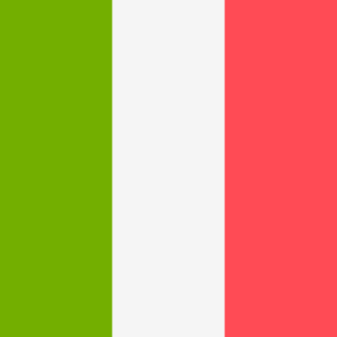
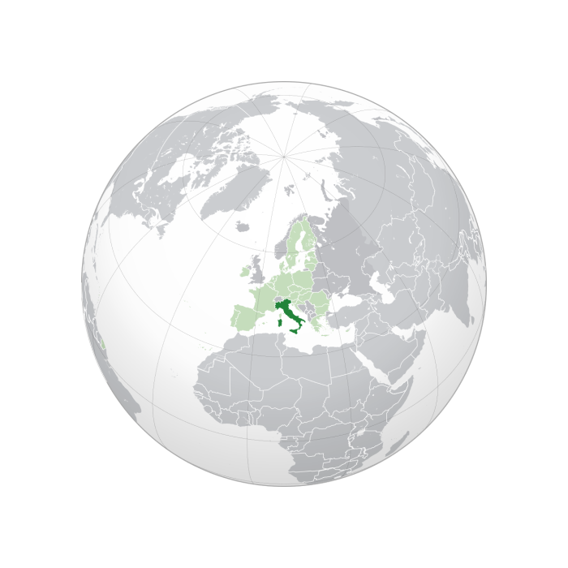

Italy Flag
The vote to choose the hosts of the 1990 tournament was held on 19 May 1984 in Zürich, Switzerland. Here, the FIFA Executive Committee chose Italy ahead of the only rival bid, the USSR, by 11 votes to 5. This awarding made Italy only the second nation to host two World Cup tournaments after Mexico had also achieved this with their 1986 staging, having agreed to replace Colombia as hosts the year before the 1990 hosts were chosen. Italy had previously held the event in 1934, where they had won their first championship.

Italy Location
Austria, England, France, Greece, West Germany and Yugoslavia also submitted initial applications for the 31 July 1983 deadline. A month later, only England, Greece, Italy and the Soviet Union remained in the hunt after the other contenders all withdrew. All four bids were assessed by FIFA in late 1983, with the final decision over-running into 1984 due to the volume of paperwork involved. In early 1984, England and Greece also withdrew, leading to a two-horse race in the final vote. The Soviet boycott of the 1984 Olympic Games, announced on the eve of the World Cup decision, was speculated to have been a major factor behind Italy winning the vote so decisively, although this was denied by the FIFA President João Havelange. The Soviet state media responded by accusing FIFA of political corruption, and blamed the organisation's American sponsors (chiefly Coca-Cola) for influencing the decision.